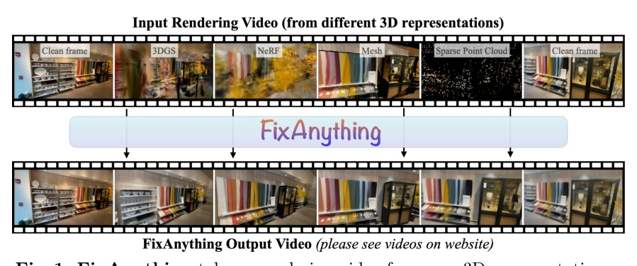
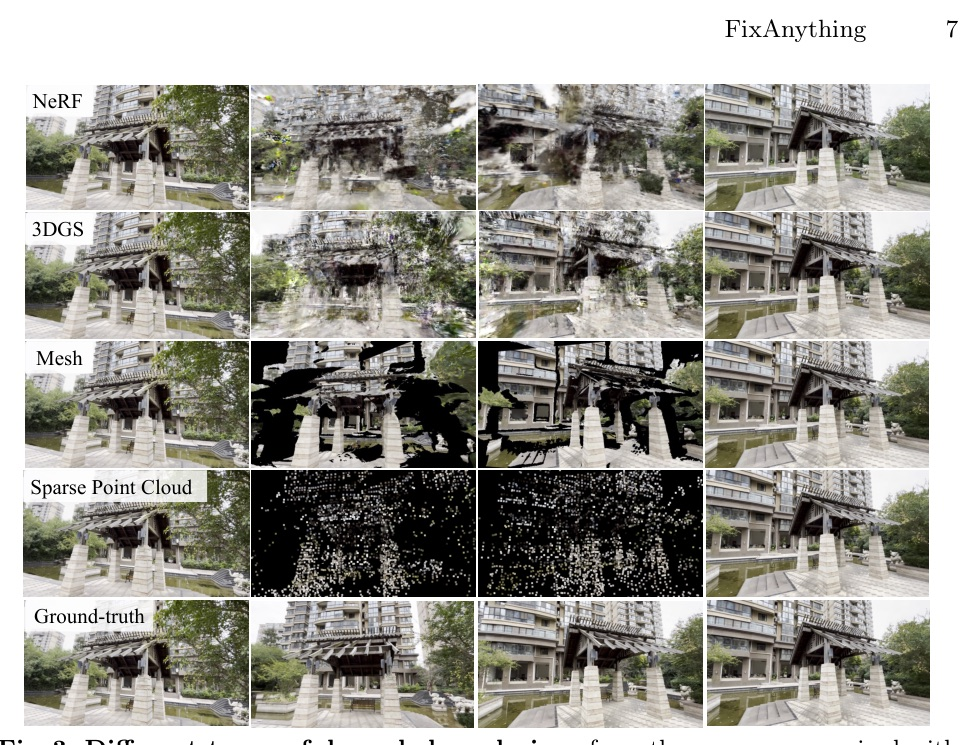
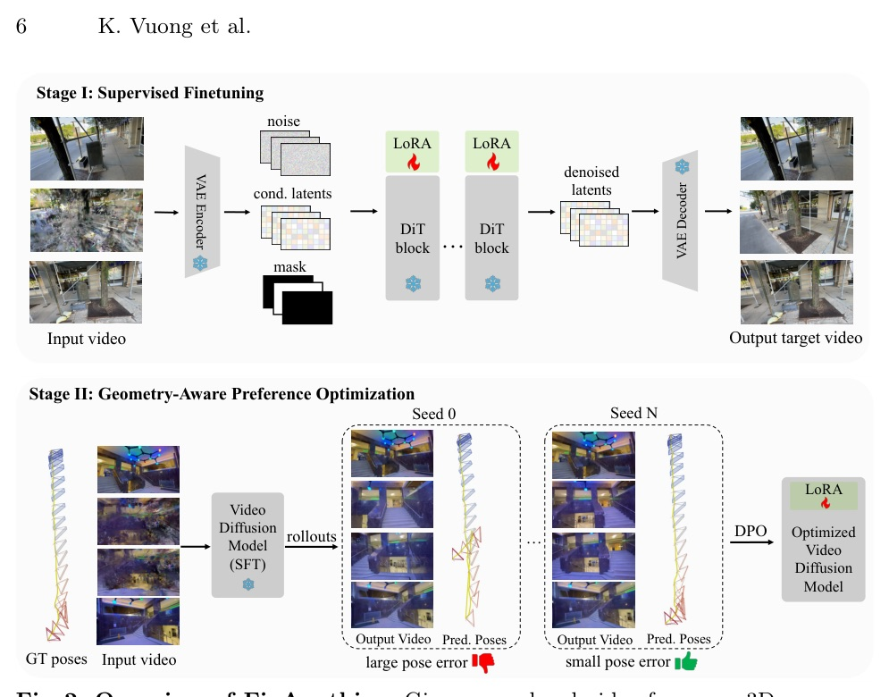
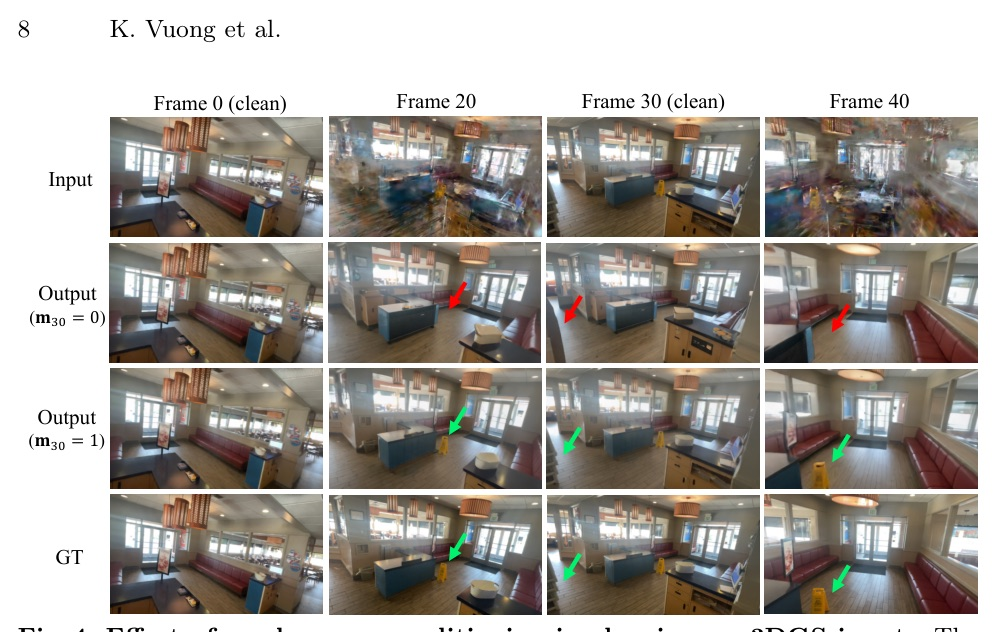
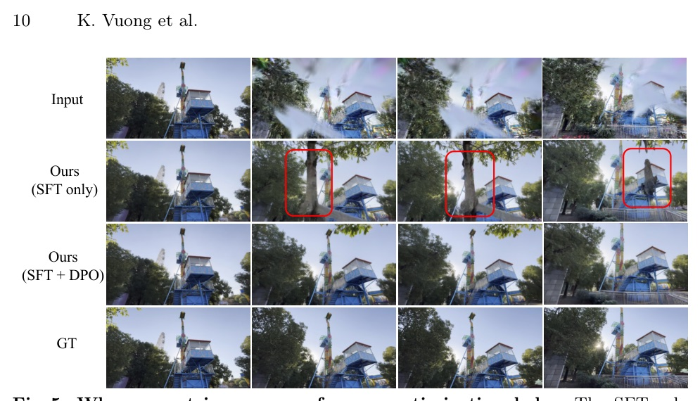
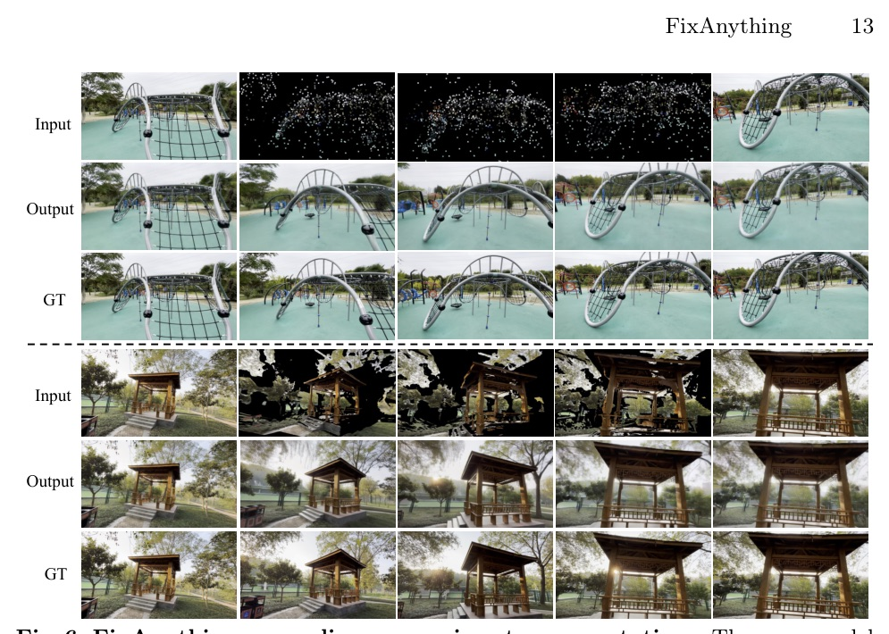
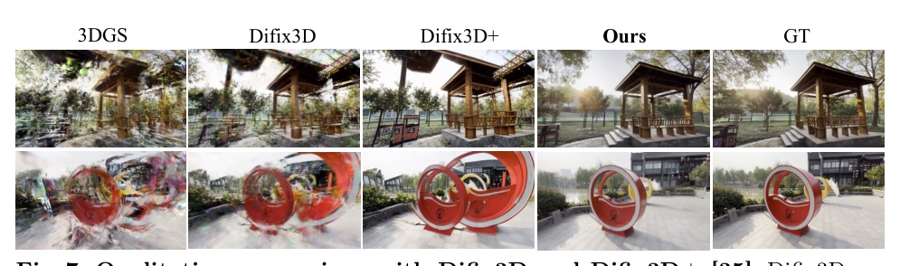
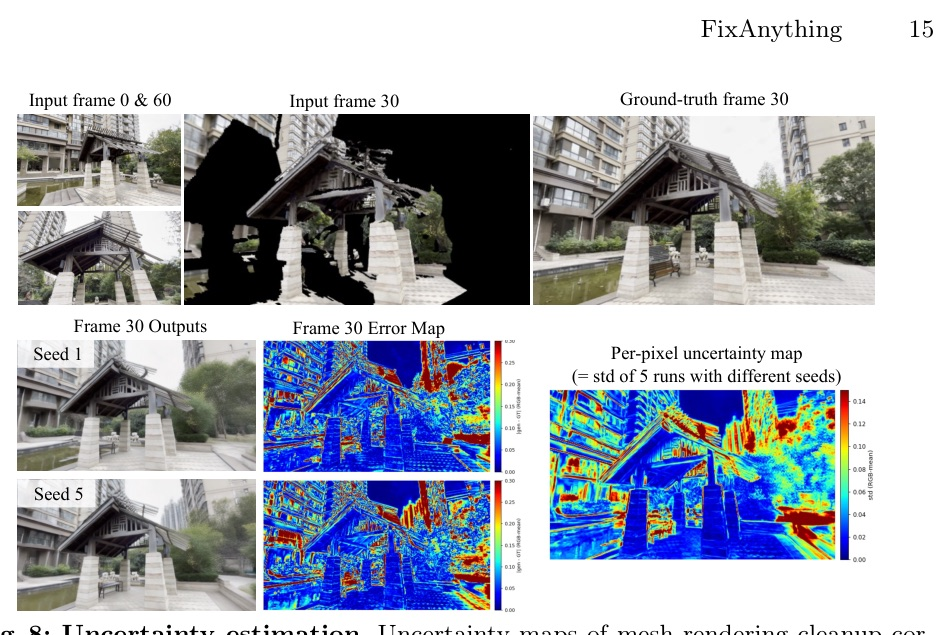

Single video prior + LoRA + mask + geometry-aware DPO for cleaning renderings from NeRF, 3DGS, mesh, and sparse point clouds.

把 rendering cleanup 當成 video-to-video translation，而不是替每種 3D representation 重做一套 specialist pipeline。
Renderer supplies camera path and coarse structure; pretrained video model supplies natural-video completion; mask and Flow-DPO keep it anchored and 3D-consistent.


Formula is simplified into HTML-safe notation; no MathJax dependency in this deck renderer.


Image realism is not enough. FixAnything optimizes for whether geometry can be recovered from the generated video.
That is the paper’s most important move: use SfM pose accuracy as a preference signal, then bake it into LoRA so inference stays unchanged.
| Method | 3v PSNR | 6v PSNR | 9v PSNR | 6v LPIPS |
|---|---|---|---|---|
| 3DGS-Enhancer† | 14.33 | 16.94 | 18.50 | 0.356 |
| Xu et al.† | 14.62 | 17.35 | 19.19 | 0.396 |
| Difix3D+ | 12.37 | 14.41 | 16.39 | 0.400 |
| FixAnything / 3DGS | 15.18 | 17.65 | 19.76 | 0.289 |
| FixAnything / mesh | 15.74 | 17.95 | 19.86 | 0.269 |
| FixAnything / sparse SfM | 15.52 | 17.74 | 19.72 | 0.271 |

| Model | PSNR | SSIM | LPIPS | AUC@5 |
|---|---|---|---|---|
| SFT only | 17.51 | 0.554 | 0.296 | 61.12 |
| SFT + Flow-DPO | 17.65 | 0.561 | 0.289 | 68.32 |
| Variant | PSNR | SSIM | LPIPS |
|---|---|---|---|
| No mask | 16.37 | 0.525 | 0.311 |
| With mask | 17.65 | 0.561 | 0.289 |
| Videos | PSNR | SSIM | LPIPS |
|---|---|---|---|
| 20 | 16.70 | 0.531 | 0.309 |
| 50 | 17.20 | 0.548 | 0.297 |
| 100 | 17.45 | 0.556 | 0.292 |
| 500 | 17.65 | 0.561 | 0.289 |
| Steps | PSNR | SSIM | LPIPS | Time |
|---|---|---|---|---|
| 5 | 18.02 | 0.574 | 0.313 | 31s |
| 10 | 17.91 | 0.570 | 0.296 | 62s |
| 25 | 17.75 | 0.564 | 0.289 | 155s |
| 50 | 17.65 | 0.561 | 0.289 | 309s |


The paper quietly demotes 3D representations from “final answer” to “conditioning scaffold”.
If sparse SfM points + clean anchors can match 3DGS after generative cleanup, the expensive dense representation may not always be the central object.
“Despite looking visually distinct, artifacts from different representations share a common property: they all deviate from the manifold of natural videos, while preserving the underlying camera trajectory and coarse scene layout.”
「不同 representation 的 artifact 外觀不同，但共同點是偏離自然影片流形，同時還保留相機軌跡與粗略場景結構。」§1 p.2
“A per-frame binary mask distinguishes clean reference frames ... from degraded frames ..., anchoring each restoration to known high-quality views.”
「逐幀 binary mask 把可信任的 clean frames 和需要修復的 degraded frames 分開，讓修復錨定在已知高品質視角。」Abstract pp.1-2
“The mean PSNR over the most-confident 25% of pixels is 25.7 dB versus 14.4 dB over the least-confident 25%.”
「最有信心 25% 像素平均 PSNR 是 25.7 dB，最低信心 25% 是 14.4 dB。」§5 p.14
週四輪轉會看 Attention, kernel, hardware, or serving-side acceleration.